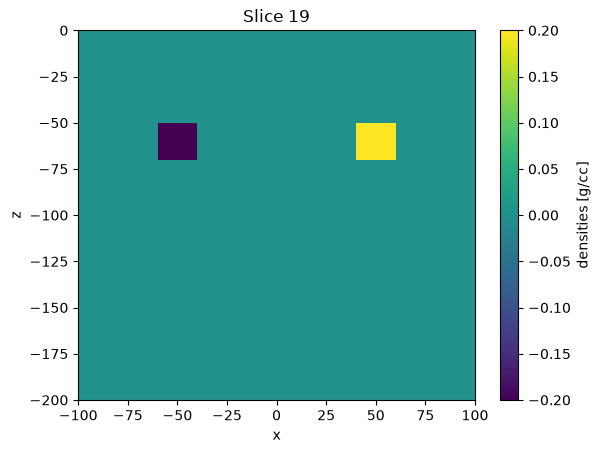
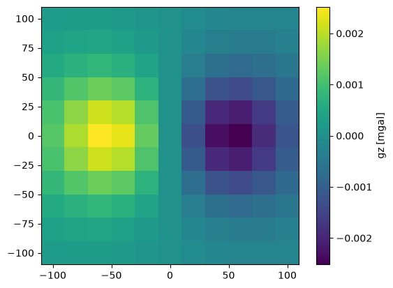

Plugging in SimPEG simulations#
Warning
Plugging in SimPEG simulations into the new inversion framwork is still in experimental stages. If you run into any issue following these instructions, please open an Issue to report it.
SimPEG simulations are not yet fully compatible with the new inversion framework, but we can wrap them in a custom WrappedSimulation class that will expose the right interface for it to work with the new inversion framework.
For example, let’s define a SimPEG’s gravity simulation using the integral formulation:
import numpy as np
import bordado as bd
import discretize
import simpeg
from simpeg.potential_fields.gravity import (
Point,
Simulation3DIntegral,
SourceField,
Survey,
)
import inversion_ideas as ii
# Define a mesh
h = [(5.0, 40)]
mesh = discretize.TensorMesh(h=[h, h, h], origin="CCN")
mesh
# Define a set of receivers in a regular grid at zeroth height
region = (-100, 100, -100, 100)
shape = (11, 11)
height = 0
coordinates = bd.grid_coordinates(region, shape=shape, non_dimensional_coords=height)
# Define the SimPEG gravity survey
locations = np.vstack(tuple(c.ravel() for c in coordinates)).T
receivers = Point(locations, components="gz")
source = SourceField(receiver_list=[receivers])
survey = Survey(source)
# Define the SimPEG simulation
simulation_simpeg = Simulation3DIntegral(
mesh, survey=survey, rhoMap=simpeg.maps.IdentityMap(mesh), engine="choclo"
)
simulation_simpeg
<simpeg.potential_fields.gravity.simulation.Simulation3DIntegral at 0x7fd2170ac440>
Such simulation can be evaluated through the dpred method by passing a given model.
Let’s consider a model that contains two rectangular blocks with different densities:
model = np.zeros(mesh.n_cells)
# Define block through their west-south-lower and east-north-upper vertices
blocks = [
[(-60, -10, -70), (-40, 10, -50)],
[(40, -10, -70), (60, 10, -50)],
]
densities = [-0.2, 0.2] # in g/cc
for (p0, p1), density in zip(blocks, densities, strict=True):
model = simpeg.utils.model_builder.add_block(
mesh.cell_centers, model, p0, p1, density
)
import matplotlib.pyplot as plt
(tmp,) = mesh.plot_slice(model, normal="Y", slice_loc=0)
plt.colorbar(tmp, label="densities [g/cc]")
plt.show()

And get the predicted gravity data for that model:
gz = simulation_simpeg.dpred(model)
maxabs = np.abs(gz).max()
easting, northing, _ = coordinates
plt.pcolormesh(easting, northing, gz.reshape(shape), vmin=-maxabs, vmax=maxabs)
plt.colorbar(label="gz [mgal]")
plt.gca().set_aspect("equal")
plt.show()

Let’s now wrap this simulation to make it compatible within the new inversion framework:
simulation = ii.WrappedSimulation(simulation_simpeg)
simulation
<inversion_ideas.simulations.WrappedSimulation at 0x7fd2170e9be0>
We can use the inversion_ideas.WrappedSimulation.__call__() method to evaluate it:
gz = simulation(model)
maxabs = np.abs(gz).max()
easting, northing, _ = coordinates
plt.pcolormesh(easting, northing, gz.reshape(shape), vmin=-maxabs, vmax=maxabs)
plt.colorbar(label="gz [mgal]")
plt.gca().set_aspect("equal")
plt.show()

And the inversion_ideas.WrappedSimulation.jacobian() to compute its Jacobian matrix:
jacobian = simulation.jacobian(model)
jacobian
<121x64000 _CustomLinearOperator with dtype=float64>
Hint
By default the WrappedSimulation will not build the
Jacobian matrix, but create a LinearOperator
that connects to the Jvec and Jtvec methods of the SimPEG
simulation.
For some SimPEG simulations we can force the WrappedSimulation to build the Jacobian matrix and store it in memory by setting store_jacobian=True:
sim = ii.WrappedSimulation(simulation_simpeg, store_jacobian=True)
sim
<inversion_ideas.simulations.WrappedSimulation at 0x7fd212112350>
sim.jacobian(model)
array([[-2.13782823e-05, -2.13372550e-05, -2.12555951e-05, ...,
-1.03258138e-07, -9.94137181e-08, -9.57099928e-08],
[-2.11340757e-05, -2.12555951e-05, -2.13372550e-05, ...,
-1.20081310e-07, -1.15656235e-07, -1.11377851e-07],
[-2.02772244e-05, -2.05434862e-05, -2.07763824e-05, ...,
-1.39230792e-07, -1.34230291e-07, -1.29369909e-07],
...,
[-4.99774796e-06, -5.11292774e-06, -5.22866776e-06, ...,
-9.78325843e-05, -5.96886566e-05, -3.90272908e-05],
[-4.54621659e-06, -4.65740050e-06, -4.76981631e-06, ...,
-3.60945193e-03, -9.48031491e-04, -3.66080581e-04],
[-4.11623023e-06, -4.22130506e-06, -4.32805791e-06, ...,
-9.48031491e-04, -3.60945193e-03, -3.23499329e-02]],
shape=(121, 64000))